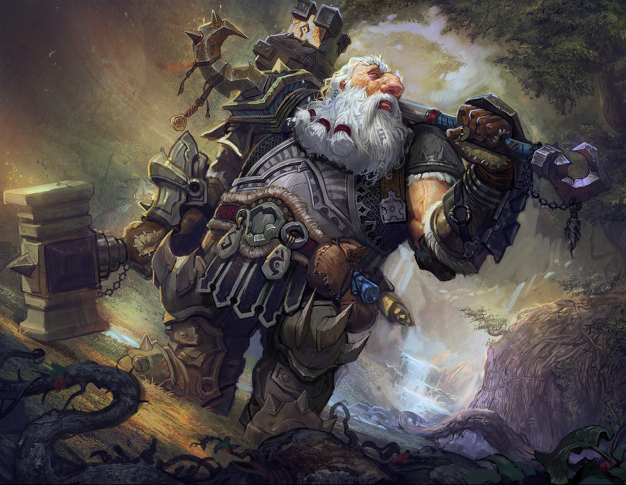
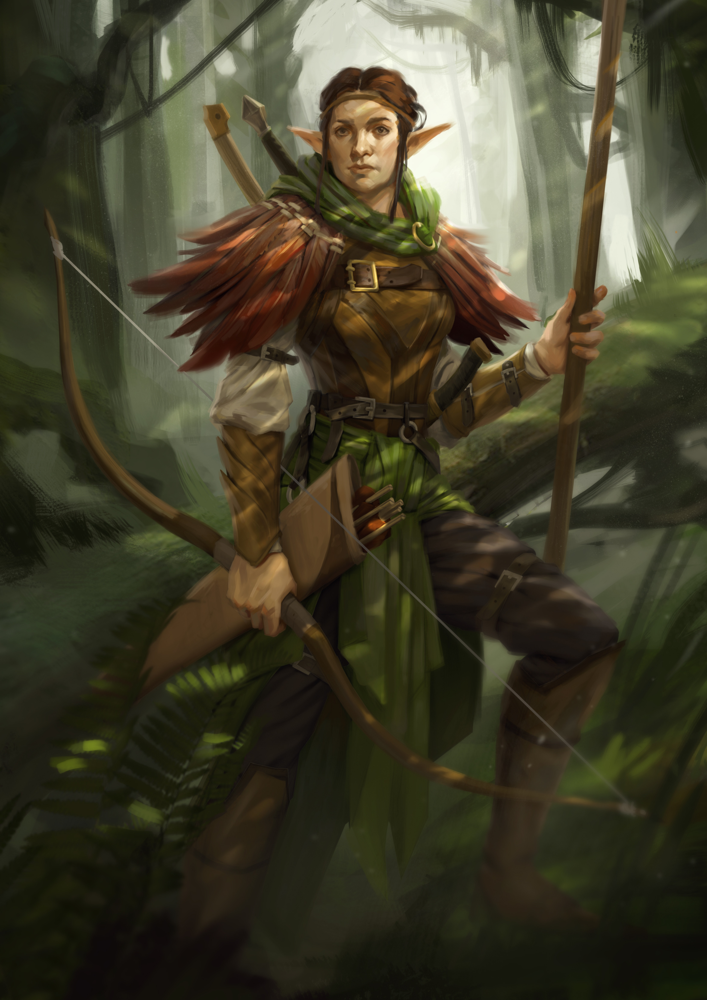
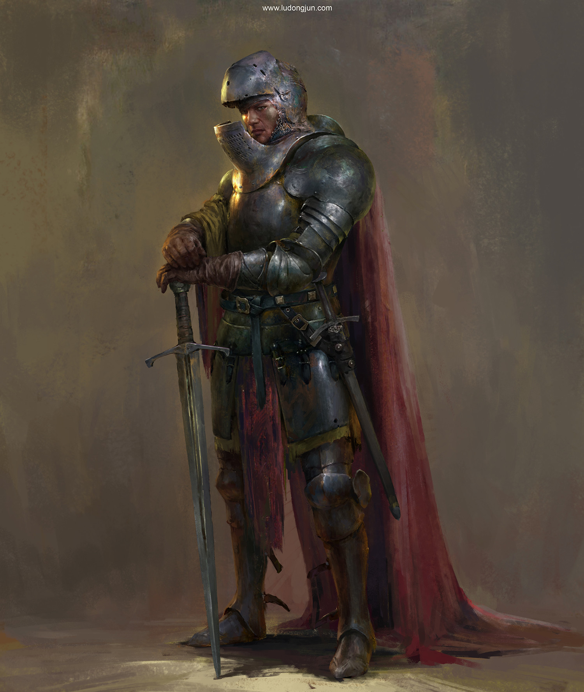
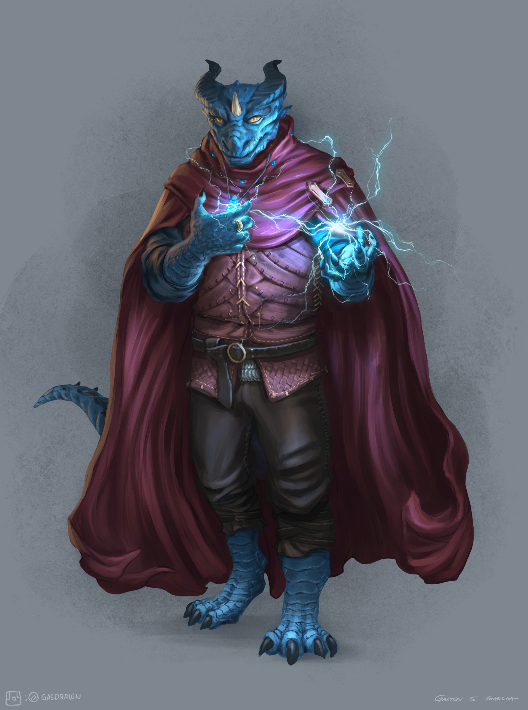
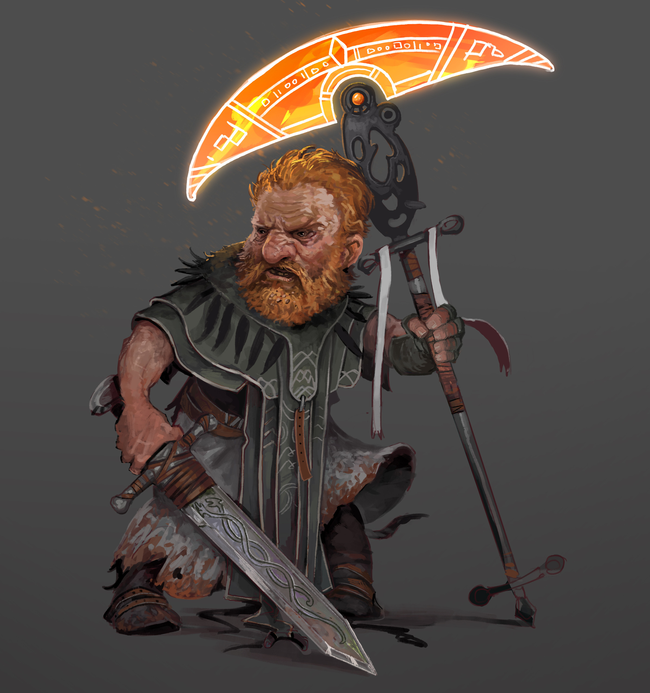
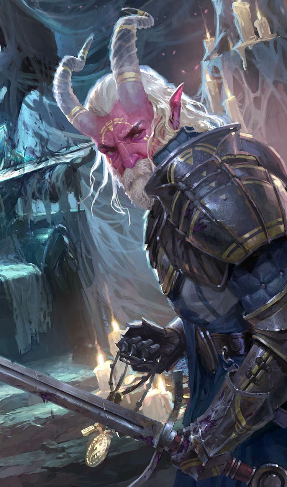

Nessa página você terá uma noção das principais raças jogaveis de D&D, porém na nossa opinião as informações contidas aqui não são suficiente para começar um jogo, a intenção aqui é te apresentar as Raças para que você tenha uma noção de qual escolher e já possa ir estudar ele de forma mais direta no Livro do Jogador.
Anão
São seres baixos e robustos, audazes e resistentes. Anões são conhecidos como hábeis guerreiros, mineradores e trabalhadores em pedra e metal. Tem estilos simples, gostam de armaduras pesadas e cuidam muito de sua barba. Anões podem viver mais de 400 anos, então os anões mais antigos ainda vivos muitas vezes lembram-se de um mundo muito diferente, guardando traumas e rancor.
"'ESTÁ ATRASADO, ELFO!', o Drow ouviu o tom áspero de uma voz familiar. Bruenor Martelo de Batalha subiu pelas costas do adversário morto, desconsiderando o fato de que o pesado monstro jazia sobre seu amigo élfico. Apesar desse novo desconforto, o nariz grande, pontudo e várias vezes quebrado do anão – bem como sua barba vermelha, raiada de branco, mas ainda cor de fogo – surgiu como uma visão agradável para Drizzt. 'Eu sabia que ia te encontrar encrencado se saísse para te procurar!'”
Anões se organizam em reinos que se estendem pelas profundezas das montanhas, onde eles mineram gemas e metais preciosos, e forjam itens admiráveis. Eles amam a beleza e a arte dos metais preciosos e das joias finas e, em alguns anões, esse amor transforma-se em avareza. O que não pode ser encontrado em suas montanhas, eles adquirem através do comércio.
O clã e os ancestrais de um anão são valores importantes para ele.
Um personagem anão possui uma variedade de habilidades inatas, parte integrante da natureza dos anões.
Aumento no Valor de Habilidade. Seu valor de Constituição aumenta em 2.
Idade. Anões tornam-se maduros na mesma proporção que os humanos, mas são considerados jovens até atingirem a idade de 50 anos. Em média, eles vivem 350 anos.
Tendência. A maioria dos anões é leal, pois acreditam firmemente nos benefícios de uma sociedade bem organizada. Eles tendem para o bem, com um forte senso de honestidade e uma crença de que todos merecem compartilhar os benefícios de uma ordem social justa.
Tamanho. Anões estão entre 1,20 e 1,50 metro de altura e pesam cerca de 75 kg. Seu tamanho é Médio.
Deslocamento. Seu deslocamento base de caminhada é de 7,5 metros. Seu deslocamento não é reduzido quando estiver usando armadura pesada.
Visão no Escuro. Acostumado à vida subterrânea, você tem uma visão superior no escuro e na penumbra. Você enxerga na penumbra a até 18 metros como se fosse luz plena, e no escuro como se fosse na penumbra. Você não pode discernir cores no escuro, apenas tons de cinza.
Resiliência Anã. Você possui vantagem em testes de resistência contra venenos e resistência contra dano de veneno.
Treinamento Anão em Combate. Você tem proficiência com machados de batalha, machadinhas, martelos leves e martelos de guerra.
Proficiência com Ferramentas. Você tem proficiência em uma ferramenta de artesão à sua escolha entre: ferramentas de ferreiro, suprimentos de cervejeiro ou ferramentas de pedreiro.
Especialização em Rochas. Sempre que você realizar um teste de Inteligência (História) relacionado à origem de um trabalho em pedra, você é considerado proficiente na perícia História e adiciona o dobro do seu bônus de proficiência ao teste, ao invés do seu bônus de proficiência normal.
Idiomas. Você pode falar, ler e escrever Comum e Anão. O idioma Anão é repleto de consoantes duras e sons guturais, e essa característica influencia, como um sotaque, qualquer outro idioma que o anão falar.
Anão da Colina
Como um anão da colina, você tem sentidos aguçados, maior intuição e notável resiliência.
Aumento no Valor de Habilidade. Seu valor de Sabedoria aumenta em 1.
Tenacidade Anã. Seu máximo de pontos de vida aumentam em 1, e cada vez que o anão da colina sobe um nível, ele recebe 1 ponto de vida adicional
Anão da Montanha
Como um anão da montanha, você é forte e resistente, acostumados a uma vida difícil em terrenos difíceis.
Aumento no Valor de Habilidade. Seu valor deForça aumenta em 2.
Treinamento Anão com Armaduras. Você adquire proficiência em armaduras leves e médias.
Elfo
Elfos são um povo mágico de graça sobrenatural, vivendo no mundo sem pertencer inteiramente à ele. Eles vivem em lugares de beleza etérea, no meio de antigas florestas ou em torres prateadas brilhando com luz feérica, onde uma música suave ecoa através do ar e fragrâncias suaves flutuam na brisa. Elfos amam a natureza e a magia, a arte e o estudo, a música e a poesia, e as coisas boas do mundo.
“’EU NUNCA IMAGINEI QUE TAL BELEZA EXISTISSE,’ LUA Dourada disse suavemente. A marcha do dia havia sido difícil, mas a recompensa no final estava muito além de seus sonhos. Os companheiros estavam em um alto rochedo sobre a lendária cidade de Qualinost. Quatro pináculos delgados erguiam-se dos cantos da cidade como hastes brilhantes, suas pedras brancas reluzentes mescladas com um tom prateado cintilante. Arcos graciosos, ligando um pináculo a outro, se elevavam no ar. Construídos por antigos ferreiros anões, eles eram fortes o suficiente para suportar o peso de um exército, no ntanto, eles pareciam tão delicados, que um pássaro pousado sobre eles, poderia lhes tirar o equilíbrio. Estes arcos cintilantes eram as únicas fronteiras da cidade. Não havia nenhuma muralha em volta de Qualinost. A cidade élfica abria seus braços de forma amorosa para a imensidão.”
Elfos são semelhantes em aparência aos Humanos, porém um pouco mais altos e mais leve, também apresentam tons de pele mais exóticos, como cobre, prata e branco-azulado. Com relação a vestimenta gostam de andar com roupas elegantes.
Podem viver mais de 700 anos e tendem a ser mais divertidos do que animados, e provavelmente mais curiosos do que gananciosos, são focados em seus objetivos e não fazem amigos ou esquecem inimigos de forma rápida.
A maioria dos elfos habita pequenas aldeias florestais escondidas entre as árvores. Elfos caçam, coletam e cultivam seus alimentos. Eles são artesãos talentosos, criando roupas e objetos de arte finamente adornados; seu contato com estrangeiros é geralmente limitado.
Seu elfo tem uma variedade de habilidades naturais, resultado de milhares de anos de refinamento élfico.
Aumento no Valor de Habilidade. Seu valor de Destreza aumenta em 2.
Idade. Embora os elfos atinjam a maturidade física com praticamente a mesma idade dos humanos, a compreensão élfica da idade adulta vai além da maturidade física, abrangendo sua experiência sobre o mundo. Um elfo tipicamente assume a idade adulta e um nome adulto com cerca de 100 anos de idade e pode viver 750 anos.
Tendência Elfos amam a liberdade, a diversidade e a expressão pessoal, então eles inclinam-se forte e suavemente para aspectos do caos. Eles valorizam e protegem a liberdade dos outros como a sua própria, e são geralmente mais bondosos que o contrário. Os drow são exceção. Seu exílio no Subterrâneo fez deles perversos e perigosos. Drow são geralmente mais maus que o contrário.
Tamanho. Elfos medem entre 1,50 a 1,80 metro de altura e possuem constituição delgada. Seu tamanho é Médio.
Deslocamento. Seu deslocamento base de caminhada é 9 metros.
Visão no Escuro. Acostumado às florestas crepusculares e ao céu noturno, você possui uma visão superior em condições de escuridão e na penumbra. Você pode enxergar na penumbra a até 18 metros como se fosse na luz plena, e no escuro como se fosse na penumbra. Você não pode discernir cores no escuro, apenas tons de cinza.
Sentidos Aguçados. Você tem proficiência na perícia Percepção.
Transe. Elfos não precisam dormir. Ao invés disso, eles meditam profundamente, permanecendo semiconscientes, durante 4 horas por dia. (A palavra em idioma comum para tal meditação é "transe".) Enquanto medita, um elfo é capaz de sonhar de certo modo. Esses sonhos na verdade são exercícios mentais que se tornam reflexos através de anos de prática. Depois de descansar dessa forma, você ganha os mesmos benefícios que um humano depois de 8 horas de sono.
Idiomas. Você pode falar, ler e escrever Comum e Élfico. O Élfico é um idioma fluido, com entonações sutis e gramática complexa. A literatura élfica é rica e diversa, e suas canções e poemas são famosos entre outras raças. Muitos bardos aprendem essa língua para que possam adicionar canções ao seu repertório.
Alto Elfo
Como alto elfo, você possui uma mente afiada e um domínio da magia básico. Alguns Altos Elfos são arrogantes e reclusos, acreditando serem superiores aos não elfos e até mesmo a outros elfos.
Aumento no Valor de Habilidade. Seu valor de Inteligência aumenta em 1.
Treinamento Élfico com Armas. Você possui proficiência com espadas longas, espadas curtas, arcos longos e arcos curtos
Truque. Você conhece um truque, à sua escolha, da lista de truques do mago. Inteligência é a habilidade usado para conjurar este truque.
Idioma Adicional. Você pode falar, ler e escrever um idioma adicional à sua escolha
Elfo da Floresta
Como um elfo da floresta, você possui sentidos e intuição aguçados, seus pés ágeis guiam-no rápida e furtivamente através de suas florestas nativas.
Aumento no Valor de Habilidade. Seu valor de Sabedoria aumenta em 1.
Treinamento Élfico com Armas. Você possui proficiência com espadas longas, espadas curtas, arcos longos e arcos curtos.
Pés Ligeiros. Seu deslocamento base de caminhada aumenta para 10,5 metros.
Máscara da Natureza. Você pode tentar se esconder mesmo quando você está apenas levemente obscurecido por folhagem, chuva forte, neve caindo, névoa ou outro fenômeno natural.
Elfo Negro (Drow)
Descendentes de uma antiga sub-raça de elfos de pele negra, os drow foram banidos da superfície do mundo por seguirem a deusa Lolth pelo caminho do mal e corrupção. Agora, eles construíram sua própria civilização nas profundezas do Subterrâneo, moldados pelo Caminho de Lolth. Também conhecidos como elfos negros, os drow possuem pele negra similar a obsidiana polida.
Aumento no Valor de Habilidade. Seu valor de Carisma aumenta em 1.
Visão no Escuro Superior. Sua visão no escuro tem alcance de 36 metros de raio.
Sensibilidade à Luz Solar. Você possui desvantagem nas jogadas de ataque e testes de Sabedoria (Percepção) relacionados a visão quando você, o alvo do seu ataque, ou qualquer coisa que você está tentando perceber, esteja sob luz solar direta.
Magia Drow. Você possui o truque globos de luz. Quando você alcança o 3° nível, você pode conjurar a magia fogo das fadas. Quando você alcança o 5° nível, você pode conjurar escuridão. Você precisa terminar um descanso longo para poder conjurar as magias desse traço novamente. Carisma é sua habilidade chave para conjurar essas magias.
Treinamento Drow com Armas. Você possui proficiência com rapieiras, espadas curtas e bestas de mão.
Halfling

Os confortos de um lar são os objetivos da maioria dos halflings: um lugar para viver em paz e sossego, longe de monstros saqueadores e embates de exércitos, com um fogo aceso e uma refeição generosa, e também uma bebida fina e boa conversa.
“RÉGIS, O HALFLING, o único de sua espécie num raio centenas de quilômetros, prendeu os dedos por trás da cabeça e recostou-se contra a capa musgosa do tronco da árvore. Régis era baixo, mesmo para os padrões de sua diminuta raça, e a lanugem de suas madeixas castanhas e encaracoladas mal ultrapassava a marca de um metro. Mas a barriga alargava-se abundantemente, devido a seu amor por uma boa refeição — ou várias delas, dependendo das oportunidades que se apresentassem. O galho retorcido que lhe servia como vara de pesca erguia-se acima dele, seguro entre dois dos seus peludos dedos do pé, e inclinava-se sobre as águas plácidas do lago, perfeitamente espelhado na superfície vítrea do Maer Dualdon.”
Os pequeninos halflings sobrevivem em um mundo cheio de criaturas maiores ao evitar serem notados, ou evitando o combate direto. Com uns 90 centímetros de altura, eles parecem inofensivos e assim conseguiram sobreviver por séculos às sombras dos impérios e à margem de guerras e conflitos políticos.
Seu halfling possui uma série de características em comum com todos os outros halflings.
Aumento no Valor de Habilidade. Seu valor de Destreza aumenta em 2.
Idade. Um halfling atinge a idade adulta aos 20 anos e pode chegar a 150 anos.
Tendência. A maioria dos halflings é leal e boa. Via de regra, eles possuem um bom coração e são amáveis, odeiam ver o sofrimento dos outros e não toleram a opressão. Eles também são muito ordeiros e tradicionais, fortemente apegados à sua comunidade e ao conforto de suas antigas tradições.
Tamanho. Halflings medem cerca de 0,90 metro de altura e pesam aproximadamente 20 kg. Seu tamanho é Pequeno.
Deslocamento. Seu deslocamento base de caminhada é 7,5 metros.
Sortudo. Quando você obtiver um 1 natural em uma jogada de ataque, teste de habilidade ou teste de resistência, você pode jogar de novo o dado e deve utilizar o novo resultado.
Bravura. Você tem vantagem em testes de resistência contra ficar amedrontado.
Agilidade Halfling. Você pode mover-se através do espaço de qualquer criatura que for de um tamanho maior que o seu.
Idiomas. Você pode falar, ler e escrever Comum e Halfling. A linguagem Halfling não é secreta, mas oshalflings são relutantes em compartilhá-la com os outros. Eles escrevem muito pouco, por isso eles não possuem uma literatura rica. No entanto, sua tradição oral é muito forte. Quase todos os halflings falam o idioma Comum para conversar com as pessoas das terras que habitam, ou através das quais eles estejam viajando
Pés Leves
Pés-leves são mais propensos à vontade de viajar do que os outros halflings, e muitas vezes vivem ao lado de outras raças ou levam uma vida nômade.
Aumento no Valor de Habilidade. Seu valor de Carisma aumenta em 1.
Furtividade Natural. Você pode tentar se esconder mesmo quando possuir apenas a cobertura de uma criatura que for no mínimo um tamanho maior que o seu.
Robusto
Um halfling robustos é mais resistente do que a média desua raça. Alguns dizem que os robustos têm sangue dos anões
Aumento no Valor de Habilidade. Seu valor de Constituição aumenta em 1.
Resiliência dos Robustos. Você tem vantagem em testes de resistência contra veneno e tem resistência contra dano de veneno.
Humano
Humanos são criaturas peculiares, são um povo aventureiro, explorador, eles são inovadores, os realizadores e os pioneiros dos mundos; talvez seja por causa de suas vidas mais curtas que eles se esforcem para alcançar o máximo que podem nos anos que têm, ou talvez eles sintam que têm algo a provar às raças.
Os humanos são os mais adaptáveis, flexíveis e ambiciosos entre todas as raças comuns. Eles têm amplos e distintos gostos, moralidades e hábitos nas muitas diferentes regiões onde eles se instalaram. Quando se estabelecem em um lugar, eles permanecem: eles constroem cidades que duram por eras, e grandes reinos que podem persistir por longos séculos. Um único humano pode ter uma vida relativamente curta, mas uma nação ou cultura humana preserva tradições com origens muito além do alcance da memória de qualquer um dos humanos. Eles vivem plenamente o presente – tornando-os bem adaptados a uma vida de aventuras – mas também planejam o futuro, esforçando-se para deixar um legado duradouro. Individualmente e como grupo, os humanos são oportunistas adaptáveis, e permanecem alerta às dinâmicas mudanças políticas e sociais.
Embora alguns humanos possam ser xenófobos, em geral suas sociedades são inclusivas. As terras humanas dão as boas-vindas a um grande número de raças não humanas em comparação com a proporção de humanos que vivem em terras não humanas.
É difícil fazer generalizações sobre os humanos, mas seu humano possui as seguintes características.
Aumento no Valor de Habilidade. Todos os seus valores de habilidade aumentam em 1.
Idade. Os humanos chegam à idade adulta no final da adolescência e vivem menos de um século.
Tendência. Os humanos não possuem inclinação a nenhuma tendência em especial. Os melhores e os piores são encontrados entre eles.
Tamanho. Os humanos variam muito em altura e peso, podem ter quase 1,50 metro ou mais de 1,80 metro. Independentemente da sua posição entre esses valores, o seu tamanho é Médio.
Deslocamento. Seu deslocamento base de caminhada é 9 metros.
Idiomas. Você pode falar, ler e escrever Comum e outro idioma adicional, à sua escolha. Os humanos normalmente aprendem os idiomas dos povos que convivem, incluindo dialetos obscuros. Eles gostam de rechear seu discurso com palavras emprestadas de outras línguas: xingamentos orcs, expressões musicais élficas, frases militares anãs e outros.
Draconato
Descendentes de dragões, como seus nomes demonstram, os draconatos andam orgulhosamente pelo mundo que os saúda com um temor incompreensível. Moldados por deuses dracônicos ou pelos próprios dragões, draconatos originalmente nasceram de ovos de dragão como uma raça única, combinando os melhores atributos de dragões e humanos. Alguns draconatos são servos fieis de dragões verdadeiros, outros formas as fileiras de soldados em grandes guerras e ainda existem os que encontram-se à toa, sem um objetivo claro na vida.
“Seu pai ficou na primeira das três escadas que levavam ao portal, imóvel. As escamas de sua face tinha ficado pálidas ao redor das bordas, mas Clanless Mehen ainda aparentava ser capaz de derrubar um urso atroz apenas com suas mãos. Ela já não usava sua antiga armadura pesada, substituída por uma armadura de escamas de cor violeta com detalhes prateados brilhantes. Também havia um brasão no seu braço, a marca de uma casa estrangeira. A espada em suas costas era a mesma, aquela que ela carregava mesmo antes de ter encontrado os gêmeos, quando partiu, nos portões de Arush Vayem. Por toda sua vida, Farideh soube que decifrar as feições de seu pai era uma perícia que ela ainda tinha que aprender. Um humano que não conseguiria observar a mudança nos olhos dela, Havilar certamente veria apenas a indiferença de um dragão no rosto de Clanless Mehen. Mas a mudança das escamas, o arco de sua crista, o conjunto de seus olhos, o balbuciar de seus dentes – a face de seu pai dizia muito. Mas cada escama, dessa vez, parecia completamente imóvel – a indiferença de um dragão, mesmo para Farideh.”
Para qualquer draconato, o clã é mais importante que sua própria vida. Draconatos devem ter devoção e respeito pelo seu clã acima de tudo, até mesmo dos deuses.
Uma busca continua pelo aperfeiçoamento pessoal reflete na autossuficiência da raça como um todo. Draconatos valorizam a perícia e excelência em todos os ramos. Eles odeiam fracassar e eles se forças a realizar esforços extremos antes de desistir de algo.
Sua herança dracônica se manifesta em vários traços que você partilha com outros draconatos.
Aumento no Valor de Habilidade. Seu valor de Força aumenta em 2 e seu valor de Carisma aumenta em 1.
Idade. Draconatos jovens crescem rapidamente. Eles caminham horas após nascerem, adquirindo o tamanho e desenvolvimento semelhante a de uma criança humana de 10 anos com 3 anos de idade e alcançam a maturidade aos 15. Eles costumam viver até os 80.
Tendência. Os draconatos tendem aos extremos, realizando uma escolha consciente de um lado ou do outro da guerra cósmica entre o bem e o mal. A maioria dos draconatos é boa, mas os que optam o mal podem se tornar vilões terríveis.
Tamanho. Os draconatos são mais altos e mais pesados que os humanos, geralmente possuindo mais de 1,80 metro e normalmente pesando mais de 125 kg. Seu tamanho é Médio.
Deslocamento. Seu deslocamento base de caminhada é 9 metros.
Ancestral Dracônico. Você possui um ancestral dracônico. Escolha um tipo de dragão da tabela Ancestral Dracônico. Sua arma de sopro e resistência a dano são determinadas pelo tipo de dragão, confira a tabela no livro.
Arma de Sopro. Você pode usar uma ação para exalar energia destrutiva. Seu ancestral dracônico determina o tamanho, formado e tipo de dano que você expele. Quando você usa sua arma de sopro, cada criatura na área exalada deve realizar um teste de resistência, o tipo do teste é determinado pelo seu ancestral dracônico. A CD do teste de resistência é 8 + seu modificador de Constituição + seu bônus de proficiência. Uma criatura sofre 2d6 de dano num fracasso e metade desse dano num sucesso. O dano aumenta para 3d6 no 6° nível, 4d6 no 11° nível e 5d6 no 16° nível. Depois de usar sua arma de sopro, você não poderá utilizá-la novamente até completar um descanso curto ou longo.
Resistência a Dano. Você possui resistência ao tipo de dano associado ao seu ancestral dracônico.
Idiomas. Você pode falar, ler e escrever Comum e Dracônico. O idioma Dracônico é conhecido por ser uma das mais antigas línguas e ainda é usado no estudo de magia. A linguagem soa áspera para a maioria das criaturas, incluindo várias consoantes e silabas firmes
Gnomo
A energia e entusiasmo dos gnomos pela vida brilha em cada pedacinho do seu pequeno corpo. A personalidade de um gnomo é muito maior que sua aparência. Para eles estar vivo é uma coisa maravilhosa e eles espremem cada gota dos seus três a cinco séculos de vida aproveitando ao máximo. Humanos devem se perguntar como deve ser entediante o curso de uma vida tão longa, e elfos levam muito tempo para saborear as belezas do mundo em seus longos anos, mas gnomos parecem estar preocupados que, mesmo com tanto tempo, não seja suficiente para fazer ou ver tudo que eles querem.
“MAGRELO E DE CABELOS LISOS, SUA PELE TEM UM TOM marron-noz e seus olhos são de um cor turquesa surpreendente, Burgell parece ter metade da altura de Aeron e precisa subir em um caixote para ver através do olho mágico. Como a maioria das residências em Oeble, aquela casa em particular foi construída por humanos e os residentes pequenos lidam com isso sem se constranger da melhor forma que podem. Mas, pelo menos a grandeza relativa do apartamento permitiu que Burgell tivesse espaço para todas as suas bugigangas de tamanho gnomo. A sala principal era sua oficina e ela continha uma variedade inimaginável de ferramentas: martelos, cinzeis, serras, fechaduras, lentes coloridas, lupas de joalheiro, jarros de pólvora e ingredientes picados para conjurar magias. Um gato cinza e gordo, o familiar do arcano, permanece deitado sobre um grimório. Ele abriu seus olhos, deu uma olhada de soslaio desdenhosa para Aeron e depois, aparentemente, voltou a dormir.”
Gnomos são uma raça engenhosa, muitos são engenheiros, alquimistas, engenhoqueiros e inventores habilidosos.
Seu personagem gnomo possui certas características em comum com todos os outros gnomos.
Aumento no Valor de Habilidade. Seu valor de Inteligência aumenta em 2.
Idade. Gnomos amadurecem a mesma proporção que os humanos e, a maioria, atinge a idade adulta por volta dos 40 anos. Eles podem viver entre 350 e 500 anos.
Tendência. Os gnomos geralmente são bons. Os que tendem para a ordem são sábios, engenheiros, pesquisadores, escolásticos, investigadores ou inventores. Os que tendem ao caos são menestréis, engenhoqueiros, andarilhos ou joalheiros caprichosos. Gnomos são bons de coração e, até mesmo os trapaceiros entre eles tendem a ser mais brincalhões que perversos.
Tamanho. Os gnomos tem entre 0,90 e 1,20 metro e seu peso médio é de 20 kg. Seu tamanho é Pequeno.
Deslocamento. Seu deslocamento base de caminhada é 7,5 metros.
Visão no Escuro. Acostumado à vida subterrânea, você tem uma visão superior no escuro e na penumbra. Você enxerga na penumbra a até 18 metros como se fosse luz plena, e no escuro como se fosse na penumbra. Você não pode discernir cores no escuro, apenas tons de cinza.
Esperteza Gnômica. Você possui vantagem em todos os testes de resistência de Inteligência, Sabedoria e Carisma contra magia.
Idiomas. Você sabe falar, ler e escrever Comum e Gnômico. A linguagem Gnômica, que usa o alfabeto Anão, é conhecida por suas técnicas de dissertação e por seus catálogos de conhecimento sobre o mundo natural.
Gnomo da Floresta
Como um gnomo da floresta, você possui um traquejo natural com ilusões e velocidade e furtividade naturais.
Eles vivem em comunidades escondidas em florestas silvestres, usando suas ilusões e truques para se esconderem das ameaças ou para mascarar sua fuga antes de serem detectados
Aumento no Valor de Habilidade. Seu valor de Destreza aumenta em 1.
Ilusionista Nato. Você conhece o truque ilusão menor. Inteligência é a sua habilidade usada para conjurá-la.
Falar com Bestas Pequenas. Através de sons e gestos, você pode comunicar ideias simples para Bestas pequenas ou menores. Gnomos da floresta amam os animais e normalmente possuem esquilos, doninhas, coelhos, toupeiras, pica-paus e outras criaturas como amados animais de estimação.
Gnomo das Rochas
Como um gnomo das rochas, você possui uma inventividade e resistência naturais acima dos outros gnomos.
Aumento no Valor de Habilidade. Seu valor de Constituição aumenta em 1.
Conhecimento de Artífice. Toda vez que você fizer um teste de Inteligência (História) relacionado a itens mágicos, objetos alquímicos ou mecanismos tecnológicos, você pode adicionar o dobro do seu bônus de proficiência, ao invés de qualquer bônus de proficiência que você normalmente use.
Engenhoqueiro. Você possui proficiência com ferramentas de artesão (ferramentas de engenhoqueiro). Usando essas ferramentas, você pode gastar 1 hora e 10 po em materiais para construir um mecanismo Miúdo (CA 5, 1 pv). O mecanismo para de funcionar após 24 horas (a não ser que você gaste 1 hora reparando-o para manter o mecanismo funcionando), ou quando você usa sua ação para desmantelá-lo; nesse momento, você pode recuperar o material usado para criá-lo. Você pode ter até três desses mecanismos ativos ao mesmo tempo
Meio-Elfo

Vagam entre dois mundos mas não pertencem a nenhum dos dois, meio-elfos combinam o que alguns dizem ser as melhores qualidades dos seus parentes elfos e humanos: a curiosidade, inventividade e ambição humanas temperadas pelos sensos refinados, amor a natureza e gostos artísticos dos elfos.
“Flint olhava para o sol poente. ele imaginou ter visto a figura de um homem caminhando ao longo do caminho. Erguendo-se, Flint recuou para a sombra de um alto pinheiro para ver melhor. As passadas do homem eram marcadas por uma graça natural – uma graça élfica, Flint diria; No entanto, o corpo do homem espessura e musculatura de um humano, enquanto que a barba definitivamente era de natureza humana. Todos os anões podiam ver que a face do homem por baixo do capuz verde tinha uma pele bronzeada e uma barba marrom-avermelhada. Um arco longo estava preso em um dos seus ombros e uma espada descansava no seu lado esquerdo. Ele estava vestido em couro macio, finamente tecido em intrincados desenhos amados pelos elfos. Mas, nenhum elfo no mundo de Krynn poderia ter uma barba... nenhum elfo, mas...
‘Tanis?’ disse Flint, hesitantemente, à medida que o homem se aproximava
‘Eu mesmo.’ O recém-chegado de rosto barbudo acompanhado por um largo sorriso. Ele abriu seus braços e, antes que o anão pudesse pará-lo, envolveu Flint em um abraço que levantou-o do chão. O anão apertou forte seu velho amigo por um instante, depois, lembrando-se da sua compostura, se contorceu e se livrou do abraço do meio-elfo”
Meio-elfos não possuem terra própria, no entanto, eles são bem-vindos em cidades humanas e um pouco menos bem recebidos em florestas élficas. Em cidades grandes, em regiões em que elfos e humanos costumam interagir, meio-elfos podem ser numerosos o suficiente para formar pequenas comunidades entre eles.
Muitos meio-elfos aprendem a lidar com todos, desde muito jovens, acabando com hostilidade e encontrando interesses em comum. Geralmente, eles se tornam excelentes embaixadores e intermediadores (exceto entre elfos e humanos, já que cada lado tende a suspeitar que o meio-elfo possa estar favorecendo o outro lado).
Seu personagem meio-elfo possui algumas qualidades em comum com os elfos e algumas são exclusivas dos meio-elfos
Aumento no Valor de Habilidade. Seu valor de Carisma aumenta em 2 e outros dois valores de habilidade, à sua escolha, aumentam em 1.
Idade. Meio-elfos atingem a maturidade ao mesmo tempo que os humanos atingem a idade adulta, por volta dos 20 anos. Eles vivem muito mais que os humanos, no entanto, raramente ultrapassam os 180 anos.
Tendência. Meio-elfos compartilham a veia caótica da sua herança élfica. Eles valorizam tanto a sua liberdade quanto sua expressão criativa, não demonstrando qualquer apresso por líderes ou seguidores. Eles se irritam com regras, ressentindo com exigências de outros e, as vezes, se provam incertos, ou pelo menos, imprevisíveis.
Tamanho. Meio-elfos tem aproximadamente a mesma altura dos humanos, variando entre 1,50 metro e 1,80 metro. Seu tamanho é Médio. Deslocamento. Seu deslocamento base de caminhada é 9 metros.
Visão no Escuro. Graças ao seu sangue élfico, você tem uma visão superior no escuro e na penumbra. Você enxerga na penumbra a até 18 metros como se fosse luz plena, e no escuro como se fosse na penumbra. Você não pode discernir cores no escuro, apenas tons de cinza.
Ancestral Feérico. Você possui vantagem em testes de resistência contra encantamento e magia não pode colocar você pra dormir.
Versatilidade em Perícia. Você ganha proficiência em duas perícias, à sua escolha.
Idiomas. Você sabe falar, ler e escrever Comum, Élfico e um idioma adicional, à sua escolha.
Meio-Orc

As vezes tribos orcs e humanas formam alianças, unindo forças em uma vasta horda para o pavor das terras civilizadas próximas. Quando essas alianças são seladas através do casamento, os meio-orcs nascem.
“O comandante Mhurren despertou a si e a sua mulher das sua cama de peles, colocou a curta cota de malha de aço em seu torso grosso e musculoso. Normalmente ele acorda antes da maioria dos guerreiros, já que ele possui uma forte veia de sangue humano e acha a luz do dia menos irritante que a maioria do resto da tribo. Entre os Caveiras Sangrentas, um guerreiro é julgado por sua força, ferocidade e tenacidade. A ancestralidade humana não é motivo para vergonha – desde que ele seja tão forte, resistente e sedento por sangue quanto os de sangue puro. Meio-orcs que sejam mais fracos que seus camaradas orcs não duram muito tempo entre os Caveiras Sangrentas ou em qualquer outra tribo orc que seja. Mas, é considerado verdade que uma pitada de sangue humano concede a um guerreiro a mistura exata de esperteza, ambição e autodisciplina para ir além, como Mhurren fez. Ele era senhor de uma tribo que reuniu duas mil lanças e era o mais forte comandante em Thar.”
Alguns meio-orcs crescem e se tornam orgulhosos comandantes de tribos orcs, seu sangue humano concede a eles um diferencial perante seus rivais orcs de sangue puro. E alguns arriscam sair pelo mundo para provar seu valor entre os humanos e outras raças mais civilizadas.
Os meio-orcs geralmente vivem entre os orcs e a maioria dos meio-orcs sempre vivem entre em terras humanas quando não vivem em tribos orc.
Seu personagem meio-orc possui certas características derivadas da sua ancestralidade orc.
Aumento no Valor de Habilidade. Seu valor de Força aumenta em 2 e seu valor de Constituição aumenta em 1.
Idade. Os meio-orcs amadurecem um pouco antes dos humanos, atingindo a idade adulta aos 14 anos. Eles envelhecem notavelmente mais rápido e, raramente, vivem mais de 75 anos.
Tendência. Meio-orcs tem uma tendência inata ao caos devido aos seus parentes orcs e não são fortemente inclinados ao bem. Meio-orcs que cresceram entre orcs e desejam viver e estão dispostos a passar sua vida entre eles, tendem a ser malignos.
Tamanho. Meio-orcs são de certa forma maiores e mais largos que os humanos, medindo entre 1,80 metro e 2,10 metros. Seu tamanho é Médio.
Deslocamento. Seu deslocamento base de caminhada é 9 metros.
Visão no Escuro. Graças ao seu sangue orc, você tem uma visão superior no escuro e na penumbra. Você enxerga na penumbra a até 18 metros como se fosse luz plena, e no escuro como se fosse na penumbra. Você não pode discernir cores no escuro, apenas tons de cinza.
Ameaçador. Você adquire proficiência na perícia Intimidação.
Resistência Implacável. Quando você é reduzido a 0 pontos de vida mas não é completamente morto, você pode voltar para 1 ponto de vida. Você não pode usar essa característica novamente até completar um descanso longo.
Ataques Selvagens. Quando você atinge um ataque crítico com uma arma corpo-a-corpo, você pode rolar um dos dados de dano da arma mais uma vez e adicioná-lo ao dano extra causado pelo acerto crítico.
Idiomas. Você sabe falar, ler e escrever Comum, Orc. O Orc é um idioma ríspido, possuindo uma linguagem de consoantes duras. Ele não possui alfabeto próprio, mas usa o alfabeto Anão.
Tiefling
Ser recebido com olhares e cochichos, sofrer violência e insultos nas ruas, ver a desconfiança e medo em cada olhar: esse é o fardo do tiefling. E para completar tudo, os tieflings sabem que isso é graças ao pacto feito gerações atrás que infundiu a essência de Asmodeus – senhor supremo dos Nove Infernos – em sua linhagem. Eles derivam de uma linhagem humana porém essa herança infernal deixou traços claros de uma ligação com demônios na sua aparência.
“‘Mas você devia ver o jeito que as pessoas olham para você, criança do diabo’
Aqueles olhos negros, frios como uma tempestade de inverno, que fitavam direto em seu coração e a seriedade repentina em sua voz sacudiu-a.
‘O que é que eles estão falando?’ Ele perguntou. ‘Primeiro a curiosidade, segundo a conspiração Terceiro uma maldição’ ela concluiu. ‘Você acha que eu nunca havia ouvido essa bobagem antes?’
‘Eu sei que você já ouviu.’ Quando ela o fitou, ela concluiu, ‘Não é como se eu estivesse entrando nas profundezas da sua mente, minha querida. Esse é o fardo de todo tiefling. Alguns conseguem transpô-lo, outros transformam isso no mó em volta de seu pescoço, outros deleitam-se com isso’ Ele inclinou a cabeça novamente, analisando-a, com um brilho depravado em seus olhos. ‘Você luta contra isso, não é mesmo? Como um pequeno gato do mato, aposto. Cada espetada e comentário apenas afia suas garras.’”
Os tieflings sobrevivem em pequenas minorias encontradas geralmente em cidades ou vilas humanas, na maioria das vezes em bairros mais barra-pesada desses lugares. Eles não confiam em qualquer um que seja amistoso com facilidade porém quando concedem sua lealdade são leais por toda a vida.
Os tieflings compartilham certos traços raciais como resultado de sua descendência infernal.
Aumento no Valor de Habilidade. Seu valor de Inteligência aumenta em 1 e seu valor de Carisma aumenta em 2.
Idade. Os tieflings amadurecem ao mesmo tempo que os humanos, mas vivem alguns anos a mais.
Tendência. Tieflings não possuem uma tendência inata ao mal, mas muitos acabam por abraçá-lo. Maligno ou não, uma natureza independente inclina a maioria dos tieflings ao alinhamento caótico.
Tamanho. Os tieflings possuem o mesmo tamanho e compleição dos humanos. Seu tamanho é Médio. Deslocamento. Seu deslocamento base de caminhada é 9 metros.
Visão no Escuro. Graças a sua herança infernal, você tem uma visão superior no escuro e na penumbra. Você enxerga na penumbra a até 18 metros como se fosse luz plena, e no escuro como se fosse na penumbra. Você não pode discernir cores no escuro, apenas tons de cinza.
Resistência Infernal. Você possui resistência a dano de fogo.
Legado Infernal. Você conhece o truque taumaturgia. Quando você atingir o 3° nível, você poderá conjurar a magia repreensão infernal como uma magia de 2° nível. Quando você atingir o 5° nível, você também poderá conjurar a magia escuridão. Você precisa terminar um descanso longo para poder usar as magias desse traço novamente. Sua habilidade de conjuração para essas magias é Carisma.
Idiomas. Você sabe falar, ler e escrever Comum e Infernal